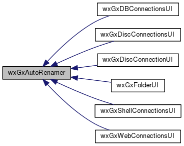
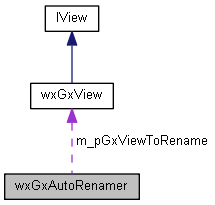

|
|
Version: 0.6.0 |


wxGxAutoRenamer Class Reference
#include <gxview.h>
Inheritance diagram for wxGxAutoRenamer:

Collaboration diagram for wxGxAutoRenamer:

Public Member Functions | |
| virtual void | BeginRenameOnAdd (wxGxView *const pGxView, const CPLString &szPath) |
| virtual bool | IsBeginRename (wxGxView *const pGxView, const CPLString &szPath) |
Protected Attributes | |
| wxGxView * | m_pGxViewToRename |
| CPLString | m_szPathToRename |
Detailed Description
Begin Rename created object.
Library: wxGISCatalogUI
The documentation for this class was generated from the following files:
- /home/bishop/work/projects/nextgismanager/include/wxgis/catalogui/gxview.h
- /home/bishop/work/projects/nextgismanager/src/catalogui/gxview.cpp
- Generated on Fri Sep 26 2014 01:11:03 for ngm by
 1.8.6
1.8.6